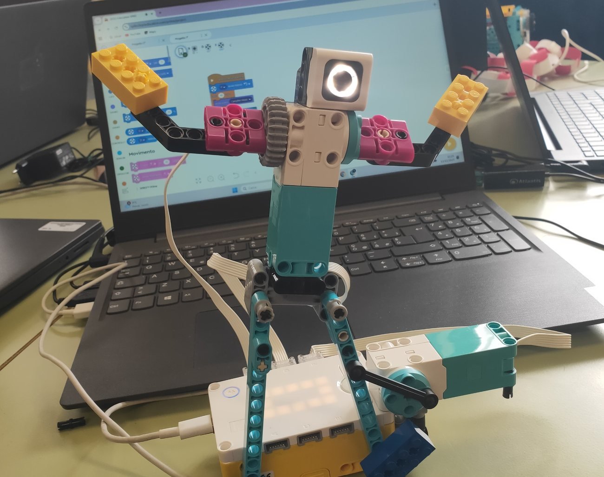
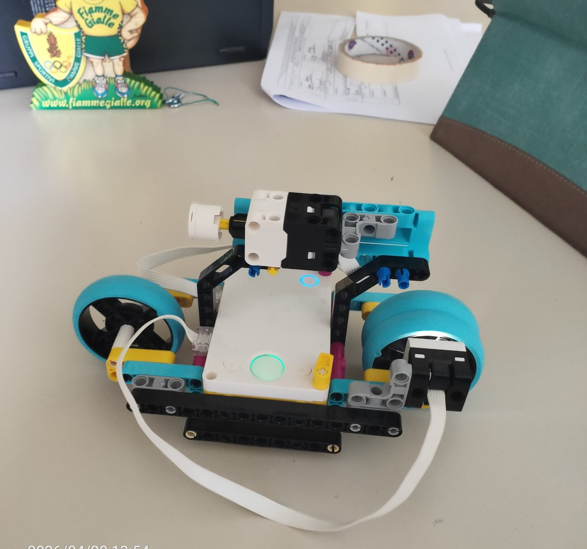
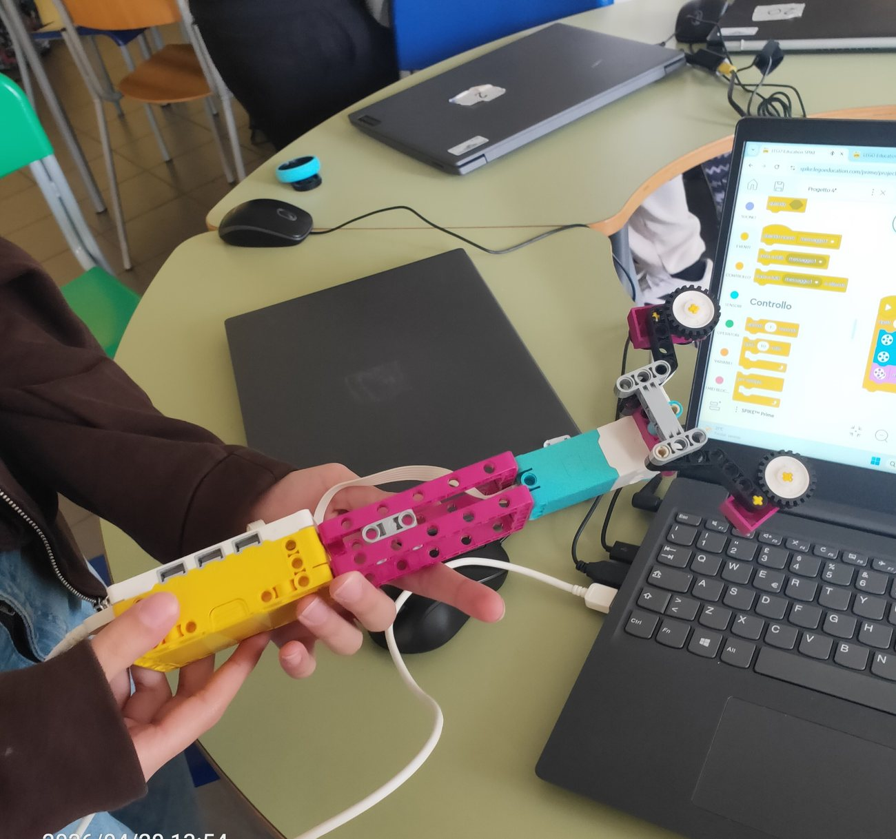
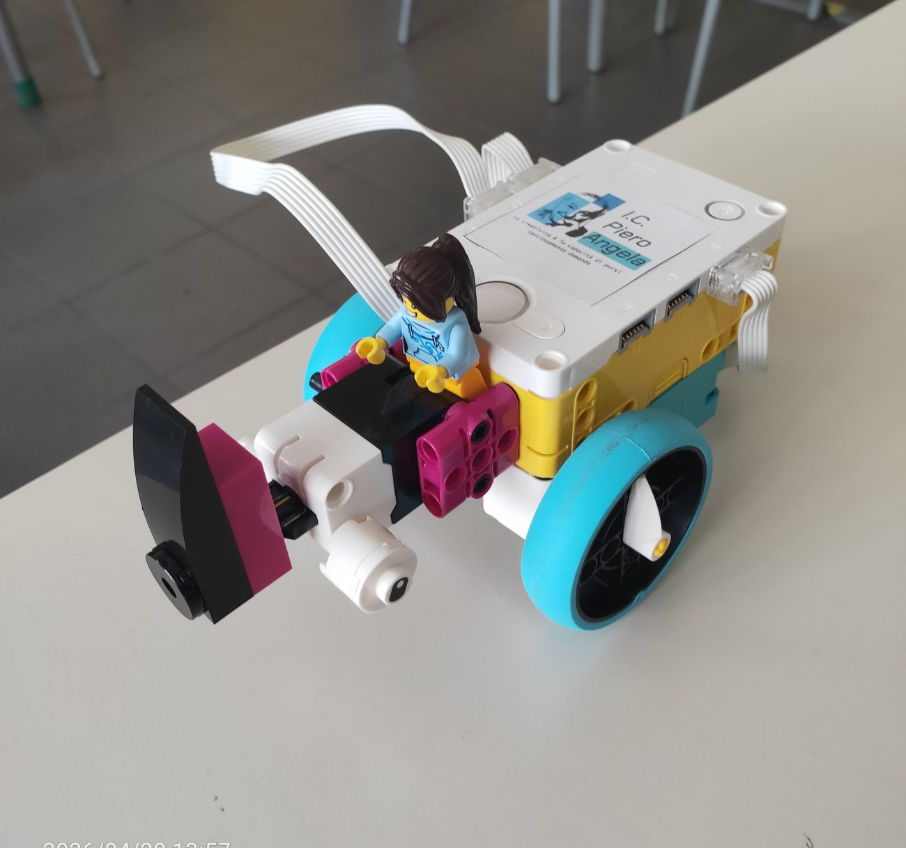

Gli studenti assemblano motori, sensori, ruote, ingranaggi e mattoncini tecnici per trasformare un’idea in un piccolo dispositivo funzionante.
Percorsi trasversali • robotica educativa • lavoro 2026
Robotica creativa con LEGO Spike Prime
Nel 2026, durante un’attività laboratoriale di circa due ore con una classe seconda, gli studenti hanno sperimentato la costruzione e la programmazione di semplici modelli robotici con i kit LEGO Spike Prime e con l’applicazione dedicata.

Esperienza digitale
Costruire, programmare, verificare
Attraverso l’applicazione LEGO Spike Prime, il movimento viene controllato con sequenze di comandi, prove, correzioni e nuove soluzioni.
L’attività valorizza il lavoro di gruppo: ogni errore diventa una verifica concreta del progetto e una possibilità di miglioramento.
L’esperienza si inserisce nel percorso di innovazione digitale dell’I.C. Piero Angela, palestra digitale di Fondazione Mondo Digitale. La documentazione pubblicata privilegia robot, modelli e fasi operative, evitando volti e dati personali.
Documentazione fotografica
Prove e modelli
Le immagini mostrano alcuni risultati dell’attività: modelli costruiti dagli studenti, collegamento ai dispositivi e prime sequenze di movimento programmato.



Video 01 • prova di movimento programmato
Video 02 • prova di movimento programmato
Video 03 • prova di movimento programmato